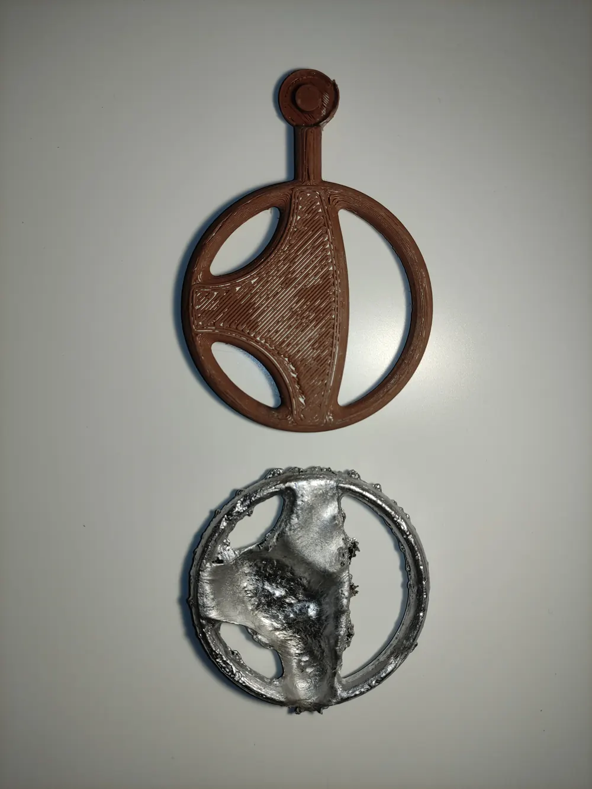
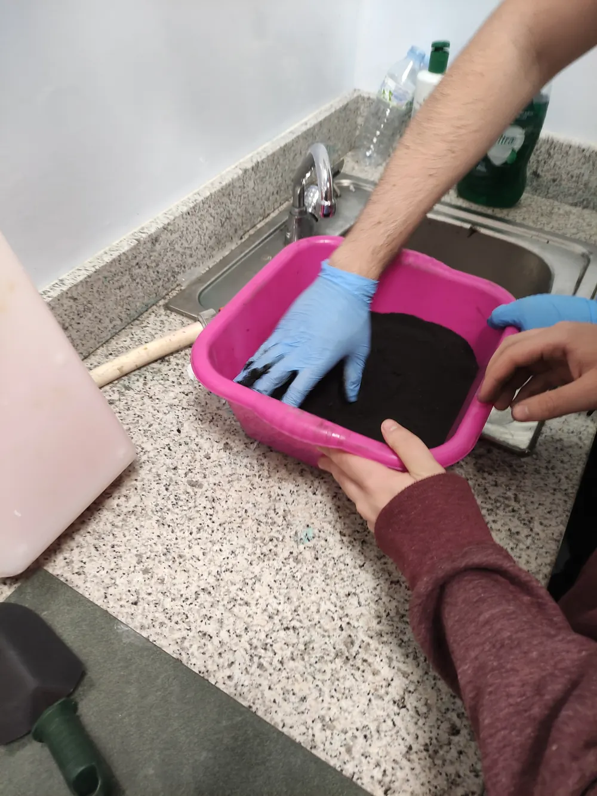
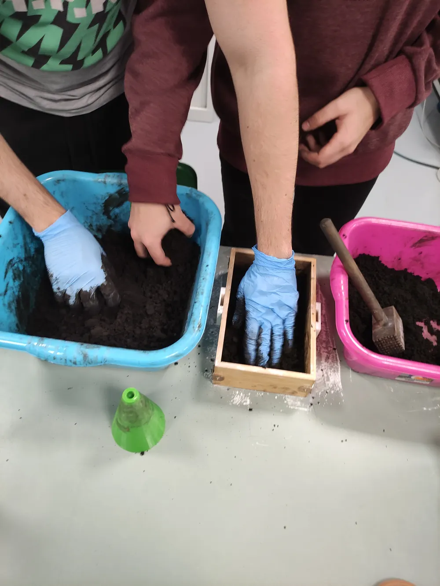
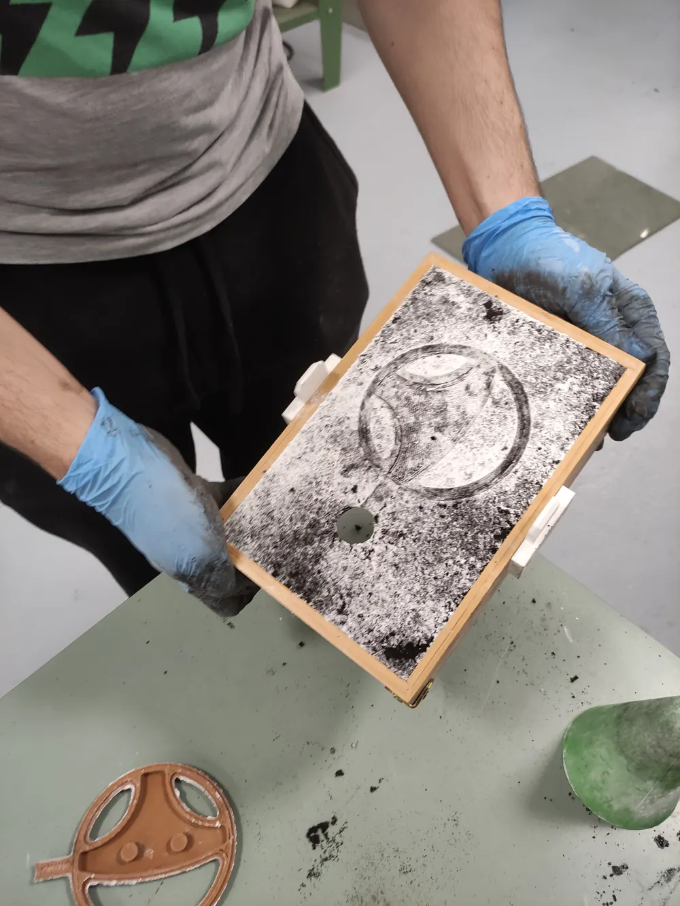
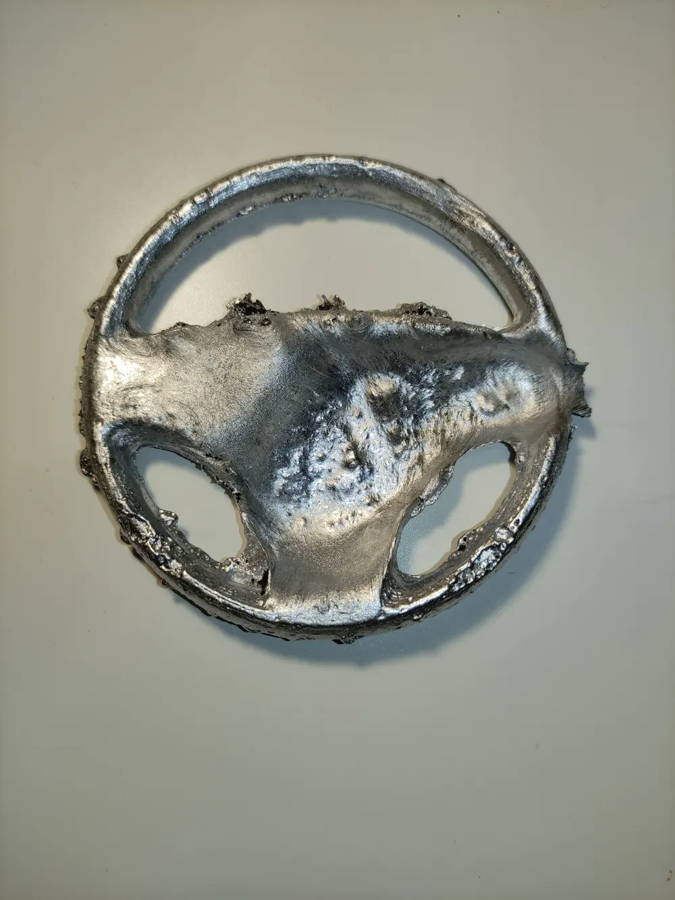

2024 · Manufacturing processes practical, EUSS
Aluminium sand casting of a scaled steering wheel
I designed a two-piece 3D-printed pattern for a scaled steering wheel, with risers and alignment features, and sand-cast it in aluminium. The casting reproduced the rim and spokes, but gas porosity across the hub showed how much the result depends on how the mould is prepared and vented.
- SolidWorks
- 3D printing (PLA)
- Green-sand casting

01Process
- Design the pattern in two halves in SolidWorks, with risers and alignment features, and 3D-print it in PLA.
- Mix the sand with small amounts of water until it holds its shape when squeezed, and homogenise it. Wet patches release gas during the pour and can destroy the mould.
- Dust the pattern and mould faces with talc so the sand does not stick.
- Ram the sand around each pattern half in the flask, taking care not to hit the PLA pattern with the rammer.
- Remove the pattern, close the two halves on their alignment features and pour the molten aluminium.
- Break the casting out once it has solidified.



02Result and lessons
The casting filled the rim and spokes, but the hub shows widespread gas porosity. That is the defect the moisture precautions above are meant to prevent: gas from damp sand and trapped air needs a way out of the mould cavity. Better venting of the mould was the main lesson I took from the part.

Tools and processes: SolidWorks, PLA 3D printing, green-sand moulding, aluminium casting.
Source: practical brief Práctica 2: Moldeo en arena (EUSS, 2024) and my photos of the practical.